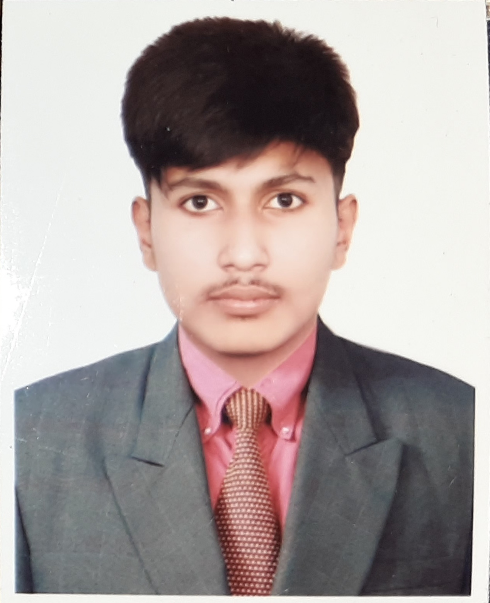

CURRICULUM VITAE
Md. Rayhan
Student Of Daffodil International University
Address: Mathpara, Munshiganj, Dhaka, Bangladesh
Email: rayhan15-4164@diu.edu.bd

CAREER OBJECTIVE
As a motivated and ambitious Computer Science Engineering student, my objective is to secure a challenging and dynamic position in the field of software development. Through my academic studies and practical experience, I have developed a strong foundation in programming languages, database management, and software engineering principles. I am eager to apply my skills and knowledge to contribute to a dynamic team, tackle complex challenges, and continuously grow as a professional. Ultimately, my goal is to become a successful software engineer and make meaningful contributions to the field of computer science.
JOB EXPERIENCE
-
Worked as a teacher at a School.
-
Working as a research assistant in a computer science lab .
-
Worked as Database Administrator.
SKILL
- Web developement(html,css,js,py)
- C programming
- Java and Python(With OOP)
- Google From
- Hard Working.
ACADEMIC QUALIFICATION
Education Qualification
| Degree |
Year |
Institution |
Result |
| BSC in CSE |
2023 in 5th semester |
Daffodil International University |
3.80 |
| HSC |
2020 |
President Prof. Dr. Iajuddin Ahmed Residential Model School & College |
4.83 |
| SSC |
2018 |
President Prof. Dr. Iajuddin Ahmed Residential Model School & College |
4.89 |
| JSC |
2016 |
President Prof. Dr. Iajuddin Ahmed Residential Model School & College |
4.90 |
EXTRA CURRICULUM ACTIVITIES
- Worked as a volunteer in annual prigramming in Munshiganj college in 2017.
- Worked as a volunteer in 3rd ICT carnival in 2020.
- Take partivipation in DIU CSE Inter Department Programming Contest.
- Joined in Volunteer Service Club of Daffodil International University.
LINGUISTIC PROFICIENCY
- English: Efficiency in reading, Writing, Speaking and Listening.
- Bangla: Efficiency in reading, Writing, Speaking and Listening.
- Tamil: Efficiency in Speaking and Listening.
- Germany: Efficiency in Speaking and Listening
PERSONAL INFORMATION
- Father's Name: Md. Ripon
- Mother's Name: Mst. Rehena Begum
- Date of Birth: 16-08-2001
- Nationality: Bangladesh
- Religion: Islam
- Marital Status: Single
- Permanent Address: District-Munshiganj, Thana-Munshiganj Sader, Mathpara
- Present Address: Khagan,Ashullia,Savar,Dhaka
INTEREST
- Playing Cricket
- Watching TV
- Travelling
- Reading Book